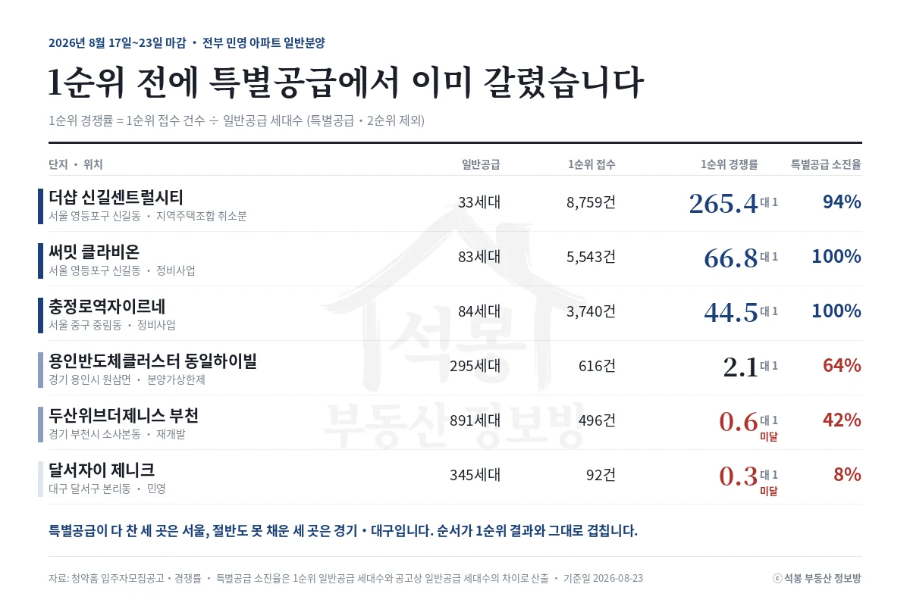
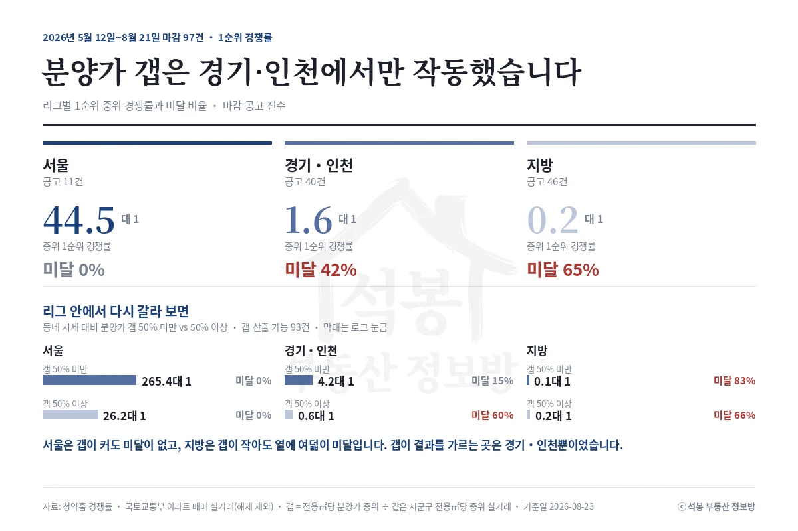

2026년 8월 17일부터 23일까지 민영 아파트 여섯 곳이 마감했습니다. 서울 세 곳은 특별공급을 94~100% 채웠고, 경기와 대구 세 곳은 8~64%에 그쳤습니다. 1순위 결과는 그 순서를 그대로 따라갔습니다. 8월 24일 월요일에는 일곱 곳이 문을 엽니다.
8월 17일~23일 성적표: 서울 세 곳, 경기 두 곳, 대구 한 곳
단지 · 위치 · 사업 방식
일반공급
1순위 접수
1순위 경쟁률
특별공급 소진율
더샵 신길센트럴시티 서울 영등포구 신길동 · 지역주택조합 조합원 취소분
33세대
8,759건
265.4대 1
94%
써밋 클라비온 서울 영등포구 신길동 · 정비사업 · 총 176세대
83세대
5,543건
66.8대 1
100%
충정로역자이르네 서울 중구 중림동 · 정비사업 · 총 186세대
84세대
3,740건
44.5대 1
100%
용인반도체클러스터 동일하이빌 경기 용인시 원삼면 · 분양가상한제 적용 · 총 589세대
295세대
616건
2.1대 1
64%
두산위브더제니스 부천 경기 부천시 소사본동 · 재개발 정비사업 · 총 1,158세대
891세대
496건
0.6대 1 미달
42%
달서자이 제니크 대구 달서구 본리동 · 민영 · 총 360세대
345세대
92건
0.3대 1 미달
8%

이 글의 경쟁률은 모두 1순위 경쟁률(1순위 접수 건수 ÷ 일반공급 세대수)입니다. 특별공급과 2순위가 빠져 있어 청약홈 화면의 총 접수 건수와는 다르게 보입니다.
표에서 눈여겨볼 것은 마지막 열입니다. 특별공급이 미달하면 그 물량이 일반공급으로 넘어가 1순위 분모가 불어납니다. 부천 소사본동 두산위브더제니스는 공고상 일반공급이 525세대였는데 특별공급 633세대 중 366세대가 남아 넘어오면서 891세대가 됐습니다. 접수는 496건이었습니다. 8월 16일 원고에서 동네 최고가보다 비싼 분양가라고 짚었던 곳입니다.
여기서부터는 회원에게 보여드립니다
카카오 로그인 3초면 전문을 읽을 수 있습니다. 무료입니다.
가입하시면 지역 시장조사 보고서(약식)를 2회 무료로 요청하실 수 있습니다.
이미 회원이면 같은 버튼으로 로그인만 됩니다
경쟁률 공식: 가격보다 리그가 먼저입니다
2026년 5월 12일부터 8월 21일까지 마감한 97곳을 전수로 다시 셌습니다. 서울은 11곳 중 미달이 한 곳도 없었고 중위 1순위 경쟁률이 44.5대 1이었습니다. 경기·인천 40곳은 중위 1.6대 1에 미달이 42%, 지방 46곳은 중위 0.2대 1에 미달이 65%였습니다.

동네 시세 대비 분양가 갭으로만 나누면 100% 이상 구간의 중위가 0.4대 1로 가장 낮게 나옵니다. 그런데 그 구간 35곳 중 28곳이 지방입니다. 갭이 나쁜 게 아니라 지방이 몰려 있는 겁니다. 그래서 리그를 먼저 나눈 뒤에 갭을 봤습니다.
서울은 갭 50% 미만이 중위 265.4대 1, 50% 이상이 26.2대 1인데 양쪽 다 미달이 0%입니다.
경기·인천은 갭 50% 미만이 4.2대 1에 미달 15%, 50% 이상이 0.6대 1에 미달 60%로 갭이 결과를 가릅니다.
지방은 갭 50% 미만이 오히려 0.1대 1에 미달 83%로, 싸게 내놔도 안 됩니다.
서울에서는 가격이 순위를 바꾸지 결과를 바꾸지는 못합니다. 같은 영등포구 신길동에서 8월 21일에 두 곳이 함께 마감했는데, 갭 33%인 더샵 신길센트럴시티가 265.4대 1, 갭 64%인 써밋 클라비온이 66.8대 1이었습니다. 네 배 차이지만 둘 다 마감입니다. 반대로 지방은 싸게 내놔도 응찰이 붙지 않습니다. 분양가가 비싼지 싼지를 따져서 답이 달라지는 지역은 경기·인천뿐입니다.
체크 5가지를 8월 17일~23일 여섯 곳에 대봤습니다
체크 항목
8월 17일~23일에 실제로 보인 것
1. 시세 갭
부천 +92%, 대구 +92%, 서울 써밋 +64%. 같은 92%인데 부천은 0.6대 1, 대구는 0.3대 1로 갈렸습니다. 아래 지역 리그와 함께 보세요.
2. 특별공급
서울 세 곳 94~100% 소진, 경기·대구 8~64%. 1순위 접수 전에 이미 답이 나와 있었습니다.
3. 지역 리그
서울 미달 0%, 경기·인천 42%, 지방 65%. 이걸 먼저 보고 가격을 봐야 순서가 맞습니다.
여섯 곳 다 민영 아파트지만 조합원 취소분·정비사업·분양가상한제가 섞여 있습니다. 용인이 갭 16%로 낮았던 것은 상한제 적용 단지이기 때문입니다.
다음 주 청약 캘린더(8월 24일~30일)
단지 · 위치 · 사업 방식
세대
분양가
전용 평당 전 타입 기준
상동역 롯데캐슬 시그니처 경기 부천 상동 · 신탁 · 분양가상한제 미적용
1,859
14.99~60.38억
6,226만원
제일풍경채 첨단3지구(A6BL) 광주 북구 월출동 · 분양가상한제 적용
638
5.15~7.96억
2,015만원
포레나힐스테이트 진주 경남 진주 이현동 · 재건축 정비사업
398
4.13~5.77억
2,225만원
아르티엠 라 테라스 전북 전주 우아동3가 · 민영
300
5.05~5.26억
2,024만원
오남역 서희스타힐스 여의재 1단지 경기 남양주 오남읍 · 지역주택조합
180
5.48~7.19억
3,021만원
의왕역 한신더휴 경기 의왕 삼동 · 가로주택정비사업 · 규제지역
108
5.63~9.40억
3,723만원
쌍용 더 플래티넘 서대문 서울 서대문 홍은동 · 가로주택정비사업 · 규제지역
62
10.87~13.73억
5,344만원
일정에서 하나만 짚겠습니다. 일곱 곳 모두 8월 24일 특별공급, 8월 25일 해당지역 1순위입니다. 그런데 투기과열지구인 쌍용 더 플래티넘 서대문과 의왕역 한신더휴는 기타지역 1순위가 하루 늦은 8월 26일이고, 2순위와 마감이 8월 27일입니다. 나머지 다섯 곳은 8월 26일에 2순위와 함께 닫힙니다. 당첨자 발표는 규제지역 두 곳이 9월 2일, 나머지가 9월 1일입니다.
여기에 시흥거모 A-5블록 신혼희망타운이 8월 26일에 함께 마감합니다. 8월 18일에 시작한 LH 공공분양이라 위 표에는 넣지 않았습니다. 국민주택이고 분양가상한제가 적용되며 신혼부부 자격 요건이 따로 붙으니, 민영 일반분양과 같은 잣대로 보시면 안 됩니다.
서울에서 나오는 곳은 쌍용 더 플래티넘 서대문 하나입니다. 62세대 가로주택정비사업이고 전용 평당 5,344만원으로 일곱 곳 중 동네 시세와 가장 가깝습니다. 경기에서는 의왕 삼동에 108세대가 나오는데, 같은 동에서 7월 23일 마감한 의왕역 SK VIEW가 6.2대 1이었습니다.
주목 단지(8월 24일 접수): 부천 상동 1,859세대
상동역 롯데캐슬 시그니처는 일곱 곳 중 세대수가 가장 크고 값도 가장 높습니다. 전용 84㎡대가 1,370세대로 전체의 74%인데 14.99억부터 16.38억까지입니다. 전용 84㎡대만 평당으로 옮기면 6,219만원이라 센트럴파크푸르지오 같은 부천 원미구 신축 실거래보다 높습니다. 8월 21일에 미달한 소사본동 두산위브와 같은 84㎡대끼리 견주면 42% 비쌉니다. 분양가를 네 가지 기준으로 뜯어본 글을 함께 올렸습니다.
자료: 청약홈 입주자모집공고·주택형별 공급정보·1순위 경쟁률, 국토교통부 아파트 매매 실거래(해제 제외). 기준일 2026년 8월 23일.
집계 대상은 2026년 5월 12일~8월 21일 마감 공고 97곳, 갭 산출은 그중 93곳. 동네 시세 대비 = 전용㎡당 분양가 중위 ÷ 같은 시군구 전용㎡당 중위 실거래.
특별공급 소진율은 1순위 일반공급 세대수와 공고상 일반공급 세대수의 차이로 산출한 값이며, 분양가는 주택형별 분양 최고금액 기준입니다. 면적·단가는 전용면적 기준.
같은 시군구 안에서도 생활권과 연식에 따라 시세가 갈리므로 갭은 방향만 봐 주세요. 투자 권유가 아닙니다.
![[주간 청약 브리핑] 1순위 전에 특별공급에서 이미 갈렸습니다](../글이미지/20260823/브리핑_체크5.webp)
![[주간 청약 브리핑] 1순위 전에 특별공급에서 이미 갈렸습니다](../글이미지/20260823/브리핑_다음주캘린더.webp)